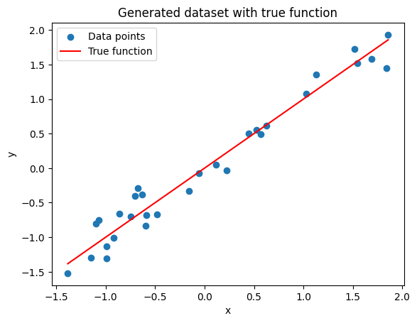
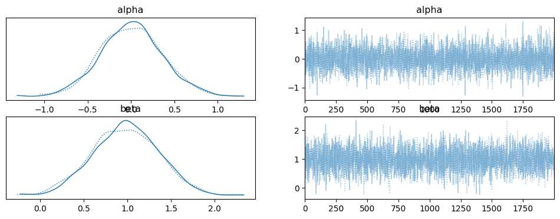
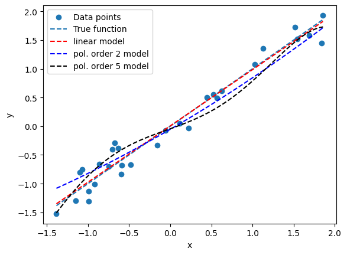
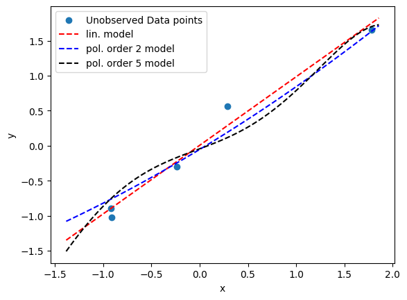
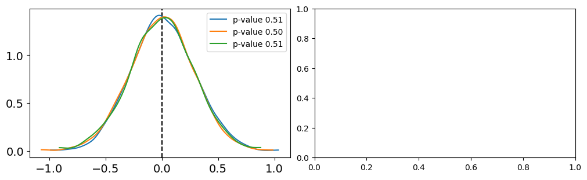

Model Comparison
Contents
Model Comparison#
%pip install pymc pytensor
Requirement already satisfied: pymc in /usr/local/lib/python3.10/dist-packages (5.10.4)
Requirement already satisfied: pytensor in /usr/local/lib/python3.10/dist-packages (2.18.6)
Requirement already satisfied: arviz>=0.13.0 in /usr/local/lib/python3.10/dist-packages (from pymc) (0.15.1)
Requirement already satisfied: cachetools>=4.2.1 in /usr/local/lib/python3.10/dist-packages (from pymc) (5.3.3)
Requirement already satisfied: cloudpickle in /usr/local/lib/python3.10/dist-packages (from pymc) (2.2.1)
Requirement already satisfied: fastprogress>=0.2.0 in /usr/local/lib/python3.10/dist-packages (from pymc) (1.0.3)
Requirement already satisfied: numpy>=1.15.0 in /usr/local/lib/python3.10/dist-packages (from pymc) (1.25.2)
Requirement already satisfied: pandas>=0.24.0 in /usr/local/lib/python3.10/dist-packages (from pymc) (1.5.3)
Requirement already satisfied: scipy>=1.4.1 in /usr/local/lib/python3.10/dist-packages (from pymc) (1.11.4)
Requirement already satisfied: typing-extensions>=3.7.4 in /usr/local/lib/python3.10/dist-packages (from pymc) (4.10.0)
Requirement already satisfied: setuptools>=48.0.0 in /usr/local/lib/python3.10/dist-packages (from pytensor) (67.7.2)
Requirement already satisfied: filelock in /usr/local/lib/python3.10/dist-packages (from pytensor) (3.13.1)
Requirement already satisfied: etuples in /usr/local/lib/python3.10/dist-packages (from pytensor) (0.3.9)
Requirement already satisfied: logical-unification in /usr/local/lib/python3.10/dist-packages (from pytensor) (0.4.6)
Requirement already satisfied: miniKanren in /usr/local/lib/python3.10/dist-packages (from pytensor) (1.0.3)
Requirement already satisfied: cons in /usr/local/lib/python3.10/dist-packages (from pytensor) (0.4.6)
Requirement already satisfied: matplotlib>=3.2 in /usr/local/lib/python3.10/dist-packages (from arviz>=0.13.0->pymc) (3.7.1)
Requirement already satisfied: packaging in /usr/local/lib/python3.10/dist-packages (from arviz>=0.13.0->pymc) (23.2)
Requirement already satisfied: xarray>=0.21.0 in /usr/local/lib/python3.10/dist-packages (from arviz>=0.13.0->pymc) (2023.7.0)
Requirement already satisfied: h5netcdf>=1.0.2 in /usr/local/lib/python3.10/dist-packages (from arviz>=0.13.0->pymc) (1.3.0)
Requirement already satisfied: xarray-einstats>=0.3 in /usr/local/lib/python3.10/dist-packages (from arviz>=0.13.0->pymc) (0.7.0)
Requirement already satisfied: python-dateutil>=2.8.1 in /usr/local/lib/python3.10/dist-packages (from pandas>=0.24.0->pymc) (2.8.2)
Requirement already satisfied: pytz>=2020.1 in /usr/local/lib/python3.10/dist-packages (from pandas>=0.24.0->pymc) (2023.4)
Requirement already satisfied: toolz in /usr/local/lib/python3.10/dist-packages (from logical-unification->pytensor) (0.12.1)
Requirement already satisfied: multipledispatch in /usr/local/lib/python3.10/dist-packages (from logical-unification->pytensor) (1.0.0)
Requirement already satisfied: h5py in /usr/local/lib/python3.10/dist-packages (from h5netcdf>=1.0.2->arviz>=0.13.0->pymc) (3.9.0)
Requirement already satisfied: contourpy>=1.0.1 in /usr/local/lib/python3.10/dist-packages (from matplotlib>=3.2->arviz>=0.13.0->pymc) (1.2.0)
Requirement already satisfied: cycler>=0.10 in /usr/local/lib/python3.10/dist-packages (from matplotlib>=3.2->arviz>=0.13.0->pymc) (0.12.1)
Requirement already satisfied: fonttools>=4.22.0 in /usr/local/lib/python3.10/dist-packages (from matplotlib>=3.2->arviz>=0.13.0->pymc) (4.49.0)
Requirement already satisfied: kiwisolver>=1.0.1 in /usr/local/lib/python3.10/dist-packages (from matplotlib>=3.2->arviz>=0.13.0->pymc) (1.4.5)
Requirement already satisfied: pillow>=6.2.0 in /usr/local/lib/python3.10/dist-packages (from matplotlib>=3.2->arviz>=0.13.0->pymc) (9.4.0)
Requirement already satisfied: pyparsing>=2.3.1 in /usr/local/lib/python3.10/dist-packages (from matplotlib>=3.2->arviz>=0.13.0->pymc) (3.1.1)
Requirement already satisfied: six>=1.5 in /usr/local/lib/python3.10/dist-packages (from python-dateutil>=2.8.1->pandas>=0.24.0->pymc) (1.16.0)
The Toy-Model#
import numpy as np
import pymc as pm
import matplotlib.pyplot as plt
import arviz as az
# Generate dataset
np.random.seed(5) # For reproducibility
x = np.random.uniform(-2.5, 2.5, 30) # 30 random points between -5 and 5
y = x + np.random.normal(0, 0.4, 30) # Adding some Gaussian noise
y =(y-np.mean(y))/np.std(y)
x =(x-np.mean(x))/np.std(x)
# Plot the generated dataset
plt.scatter(x, y, label='Data points')
plt.plot(np.sort(x), np.sort(x), label='True function', color='r')
plt.legend()
plt.xlabel('x')
plt.ylabel('y')
plt.title('Generated dataset with true function')
plt.show()
print(np.mean(y))
print(np.percentile(y,[25,75]))

-1.4802973661668754e-17
[-0.73679458 0.60118835]
### LINEAR MODEL
with pm.Model() as model_l:
# Priors for unknown model parameters
alpha = pm.Normal('alpha', mu=0, sigma=10)
beta = pm.Normal('beta', mu=0, sigma=10)
# Linear model
y_est = alpha + beta * x
# Likelihood (sampling distribution) of observations
y_obs = pm.Normal('y_obs', mu=y_est, sigma=2, observed=y)
# Inference
idata_l = pm.sample(2000)
trace_l = pm.sample(return_inferencedata=False)
100.00% [3000/3000 00:02<00:00 Sampling chain 0, 0 divergences]
100.00% [3000/3000 00:02<00:00 Sampling chain 1, 0 divergences]
100.00% [2000/2000 00:02<00:00 Sampling chain 0, 0 divergences]
100.00% [2000/2000 00:01<00:00 Sampling chain 1, 0 divergences]
az.plot_trace(idata_l)
plt.show()

### POLYNOMIAL (ORDER 2) MODEL
with pm.Model() as model_p2:
# Priors for unknown model parameters
alpha = pm.Normal('alpha', mu=0, sigma=10)
beta = pm.Normal('beta', mu=0, sigma=1)
gamma = pm.Normal('gamma', mu=0, sigma=1)
# Quadratic model
y_est = alpha + beta * x + gamma * x**2
# Likelihood (sampling distribution) of observations
y_obs = pm.Normal('y_obs', mu=y_est, sigma=2, observed=y)
# Inference
idata_p2 = pm.sample(2000)
az.plot_trace(idata_p2)
#plt.show()
100.00% [3000/3000 00:03<00:00 Sampling chain 0, 0 divergences]
100.00% [3000/3000 00:04<00:00 Sampling chain 1, 0 divergences]
array([[<Axes: title={'center': 'alpha'}>,
<Axes: title={'center': 'alpha'}>],
[<Axes: title={'center': 'beta'}>,
<Axes: title={'center': 'beta'}>],
[<Axes: title={'center': 'gamma'}>,
<Axes: title={'center': 'gamma'}>]], dtype=object)
### POLYNOMIAL (ORDER 5) MODEL
with pm.Model() as model_p5:
# Priors for unknown model parameters
alpha = pm.Normal('alpha', mu=0, sigma=10)
betas = pm.Normal('betas', mu=0, sigma=1, shape = 5)
# Quadratic model
y_est = alpha + betas[0] * x + betas[1] * x**2 + betas[2] * x**3 + betas[3] * x**4 + betas[4] * x**5
# Likelihood (sampling distribution) of observations
y_obs = pm.Normal('y_obs', mu=y_est, sigma=2, observed=y)
# Inference
idata_p5 = pm.sample(1000)
az.plot_trace(idata_p5)
#plt.show()
100.00% [2000/2000 00:11<00:00 Sampling chain 0, 0 divergences]
100.00% [2000/2000 00:11<00:00 Sampling chain 1, 0 divergences]
array([[<Axes: title={'center': 'alpha'}>,
<Axes: title={'center': 'alpha'}>],
[<Axes: title={'center': 'betas'}>,
<Axes: title={'center': 'betas'}>]], dtype=object)
### Compare models
plt.scatter(x, y, label='Data points')
plt.plot(np.sort(x), np.sort(x), label='True function', color='C0', linestyle='--')
x_new = np.linspace(np.min(x),np.max(x),100)
#linear
alpha_l_post = idata_l.posterior['alpha'].mean(axis=0).mean(axis=0).values
beta_l_post = idata_l.posterior['beta'].mean(axis=0).mean(axis=0).values
yl_post = alpha_l_post + beta_l_post * x_new
plt.plot(x_new, yl_post, 'r', label='linear model', linestyle='--')
#pol 2
alpha_p2_post = idata_p2.posterior['alpha'].mean(axis=0).mean(axis=0).values
beta_p2_post = idata_p2.posterior['beta'].mean(axis=0).mean(axis=0).values
gamma_p2_post = idata_p2.posterior['gamma'].mean(axis=0).mean(axis=0).values
yp2_post = alpha_p2_post + beta_p2_post * x_new + gamma_p2_post * x_new**2
plt.plot(x_new, yp2_post, 'b', label='pol. order 2 model', linestyle='--')
#pol 5
alpha_p5_post = idata_p5.posterior['alpha'].mean(axis=0).mean(axis=0).values
beta1_p5_post = idata_p5.posterior['betas'].mean(axis=0)[:,0].mean(axis=0).values
beta2_p5_post = idata_p5.posterior['betas'].mean(axis=0)[:,1].mean(axis=0).values
beta3_p5_post = idata_p5.posterior['betas'].mean(axis=0)[:,2].mean(axis=0).values
beta4_p5_post = idata_p5.posterior['betas'].mean(axis=0)[:,3].mean(axis=0).values
beta5_p5_post = idata_p5.posterior['betas'].mean(axis=0)[:,4].mean(axis=0).values
yp5_post = alpha_p5_post + beta1_p5_post * x_new + beta2_p5_post * x_new**2 + beta3_p5_post * x_new**3 \
+ beta4_p5_post * x_new**4 + beta5_p5_post * x_new**5
plt.plot(x_new, yp5_post, 'k', label='pol. order 5 model', linestyle='--')
plt.legend()
plt.xlabel('x')
plt.ylabel('y')
plt.show()

### new data points
unobserved = 5
x_unobs = np.random.uniform(-2.5, 2.5, unobserved) # 30 random points between -5 and 5
y_unobs = x_unobs + np.random.normal(0, 0.4, unobserved) # Adding some Gaussian noise
y_unobs =(y_unobs-np.mean(y_unobs))/np.std(y_unobs)
x_unobs =(x_unobs-np.mean(x_unobs))/np.std(x_unobs)
plt.scatter(x_unobs, y_unobs, label='Unobserved Data points')
plt.plot(x_new, yl_post, 'r', label='lin. model', linestyle='--')
plt.plot(x_new, yp2_post, 'b', label='pol. order 2 model', linestyle='--')
plt.plot(x_new, yp5_post, 'k', label='pol. order 5 model', linestyle='--')
plt.legend()
plt.xlabel('x')
plt.ylabel('y')
plt.show()

Using Posterior Predictive Checks#
y_l = pm.sample_posterior_predictive(idata_l,model=model_l)
100.00% [4000/4000 00:00<00:00]
y_p2 = pm.sample_posterior_predictive(idata_p2,model=model_p2)
100.00% [4000/4000 00:00<00:00]
y_p5 = pm.sample_posterior_predictive(idata_p5,model=model_p5)
100.00% [2000/2000 00:00<00:00]
y_l_obs = y_l.posterior_predictive['y_obs']
y_p2_obs = y_p2.posterior_predictive['y_obs']
y_p5_obs = y_p5.posterior_predictive['y_obs']
import xarray as xr
y_l_concatenated = xr.concat([y_l_obs.sel(chain=0), y_l_obs.sel(chain=1)], dim='draw')
y_p2_concatenated = xr.concat([y_p2_obs.sel(chain=0), y_p2_obs.sel(chain=1)], dim='draw')
y_p5_concatenated = xr.concat([y_p5_obs.sel(chain=0), y_p5_obs.sel(chain=1)], dim='draw')
plt.figure(figsize=(8,3))
y_o = y
y_lo = y_l.posterior_predictive['y_obs'].mean(axis=0).mean(axis=0).values
y_lo2 = y_l_concatenated.mean(axis=0).values #same thing as above...
y_p2o = y_p2.posterior_predictive['y_obs'].mean(axis=0).mean(axis=0).values
y_p5o = y_p5.posterior_predictive['y_obs'].mean(axis=0).mean(axis=0).values
y_p5o2 = y_p5_concatenated.mean(axis=0).values #same thing as above...
data = [y_o, y_lo, y_lo, y_p2o, y_p5o, y_p5o2]
labels = ['data', 'linear model', 'linear model conc.', 'pol. order 2', 'pol. order 5', 'pol. order 5 conc.']
for i, d in enumerate(data):
mean = d.mean()
err = np.percentile(d, [25,75])
plt.errorbar(mean,-i,xerr=[[-err[0]],[err[1]]], fmt='o')
plt.text(mean,-i+0.2, labels[i], ha='center', fontsize=14)
plt.ylim([-i-0.5,0.5])
plt.yticks([])
([], [])
some little difference, worth exploring…
# to be completed... this code snippet can be easily extended to include other metrics, such as IQR (Q3-Q1)
fig, ax = plt.subplots(1,2,figsize=(10,3),constrained_layout=True)
labels = ['linear', 'poly2', 'poly5']
for idx, func in enumerate([np.mean]):
T_obs = func(y)
ax[idx].axvline(T_obs, 0, 1, color='k', ls='--')
for label, d_sim, c in zip(labels,[y_l_concatenated.values, y_p2_concatenated.values, y_p5_concatenated.values],['C0','C1','C2']):
T_sim = func(d_sim, 1)
p_value = np.mean(T_sim >= T_obs)
az.plot_kde(T_sim, plot_kwargs={'color':c}, label=f'p-value {p_value:.2f}', ax=ax[idx])

if data and simulation agree, we should expect a p-value around 0.5
Using Information Criteria#
with model_l:
pm.compute_log_likelihood(idata_l)
100.00% [4000/4000 00:00<00:00]
with model_p2:
pm.compute_log_likelihood(idata_p2)
100.00% [4000/4000 00:00<00:00]
df_compare = az.compare({"model_l": idata_l, "model_p2": idata_p2}, ic='waic') #loo is recommended
df_compare
| rank | elpd_waic | p_waic | elpd_diff | weight | se | dse | warning | scale | |
|---|---|---|---|---|---|---|---|---|---|
| model_l | 0 | -163.133370 | 0.061837 | 0.000000 | 1.0 | 0.126895 | 0.000000 | False | log |
| model_p2 | 1 | -163.621849 | 0.109620 | 0.488479 | 0.0 | 0.143890 | 0.055853 | False | log |
az.plot_compare(df_compare, insample_dev=False)
<Axes: title={'center': 'Model comparison\nhigher is better'}, xlabel='elpd_loo (log)', ylabel='ranked models'>